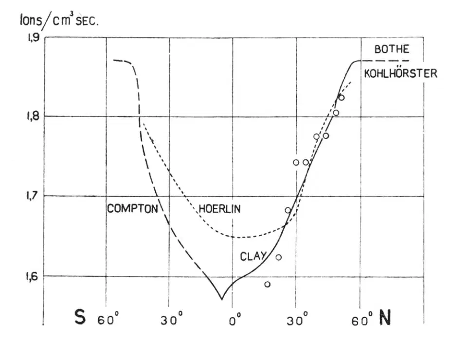

英文
英文约翰·普林斯
编者按
雅各布·克莱、阿瑟·康普顿和其他人的早期实验曾经说明宇宙射线的通量在靠近赤道处有一个最小值。本文中，普林斯报告了他在从荷兰开往南非的斯普林方廷号远洋轮上利用装载于船上的电离室测量得到的结果，该结果同样说明在赤道附近会出现一个最小值。他说，不幸的是他的仪器坏了，所以没有能够收集到南纬的数据，这使他失去了一个证明其他研究人员所指出的宇宙射线在南北半球的通量存在明显不同的机会。但他的结果确实表明了大多数的宇宙射线都是带电粒子，它们会受到地球磁场的影响，而且在两极附近最易穿透。 英文
克莱[1]在往返于荷兰和爪哇之间的旅行中首次发现宇宙射线的强度在地磁赤道附近存在一个最小值。康普顿[2]通过广泛的调查证实了“纬度效应”的存在，并发现在高纬度地区这种效应会更明显。克莱和贝尔拉赫[3]在海平面上进行测量得到了更为精确的结果。考虑到他们的调查也是在从荷兰至爪哇的航线上进行的，我认为有必要在从荷兰到南非的航线上进行类似的测量，以便于比较。就在我做这个实验的同时，霍尔林[4]发表了他在秘鲁–麦哲伦海峡–汉堡一线测量得到的结果。这些结果连同克莱给出的其他人的结果都画在图1中，用连续曲线代表；我的结果用空心圆圈表示。把我的结果分别与克莱和霍尔林的结果相比较后发现：我的结果与克莱的结果更接近。 英文

图1．宇宙射线的纬度效应。圆圈代表作者的结果，纵坐标表示在标准大气中产生的离子对数量。 英文
不幸的是，进入热带地区以后我的仪器失效了，因此，我无法验证在霍尔林的结果中所指出的南北半球间的明显差异。虽然我们对所有调查者都发现在赤道附近宇宙射线存在同量级的最小值感到满意（这表明宇宙射线主要是由一系列宇宙中的带电粒子组成的），但精确地重复进行此类测量以得到该曲线的准确形状仍然是有必要的。 英文
以下是我的观测过程。电离室的容积为3升，里面充有30个标准大气压的氩气。在用8 cm厚的铁板屏蔽后，电离室被放在往返于荷兰—非洲航线的斯普林方廷号远洋轮上的一个小屋里，铁板屏蔽上方的甲板厚度相对而言可忽略不计。电离室的壁上加有120伏的电压，在一根与一个林德曼静电计和一个小电容（4 cm）相连的绝缘棒上收集电离电流。在开始观测之前，先打开绝缘棒的接地开关，同时开始用跑表计时。为了保持静电计的示数为零，需要不断增加电容上的电压以补偿由于电离电流引起的电荷变化。过一段时间（大约6分钟）再读出电压表上的电位值（约为3伏）。假定这时已经达到了饱和状态，则由此可以推算出电离室中每秒每立方厘米产生的离子数，这个数被称为宇宙射线的“强度”。我对气压表的压力进行了小的修正（1 cm汞柱修正了2.4%）。为了使纬度为50º时的值与克莱在标准大气中得到的值一致，图1曲线上的这些值（和霍尔林的结果类似）都已经乘上了这样的一个因子（1/33.2）。 英文
我要感谢格罗宁根大学基金会给予的资助，感谢科斯特教授让我在他的实验室中制作仪器，感谢克莱教授为我提供了一些好的建议，最后我还要感谢荷兰—非洲航线的负责人以及斯普林方廷号上全体船员的积极配合。 英文
（刘霞 翻译；马宇蒨 审稿）